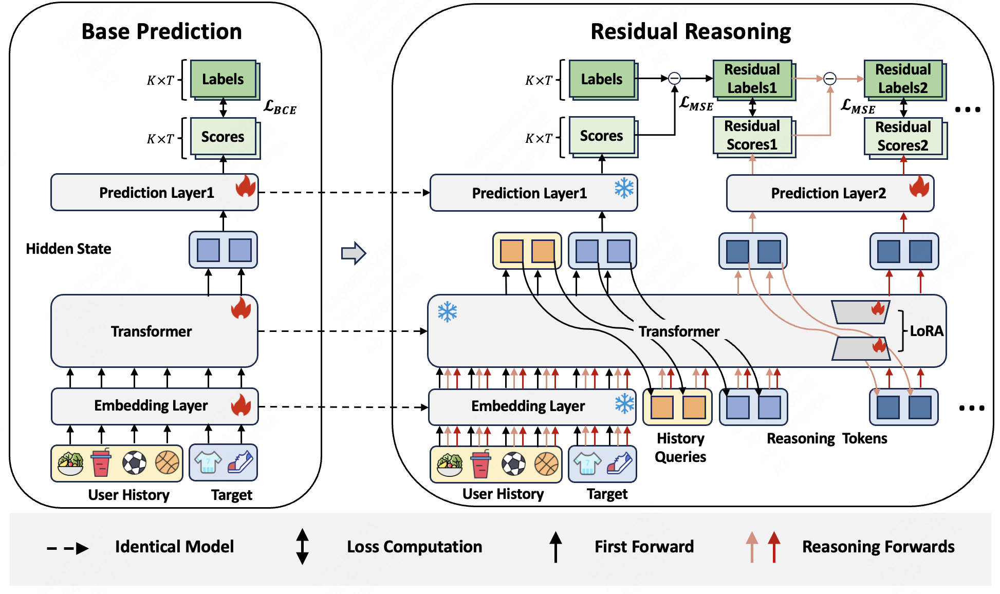
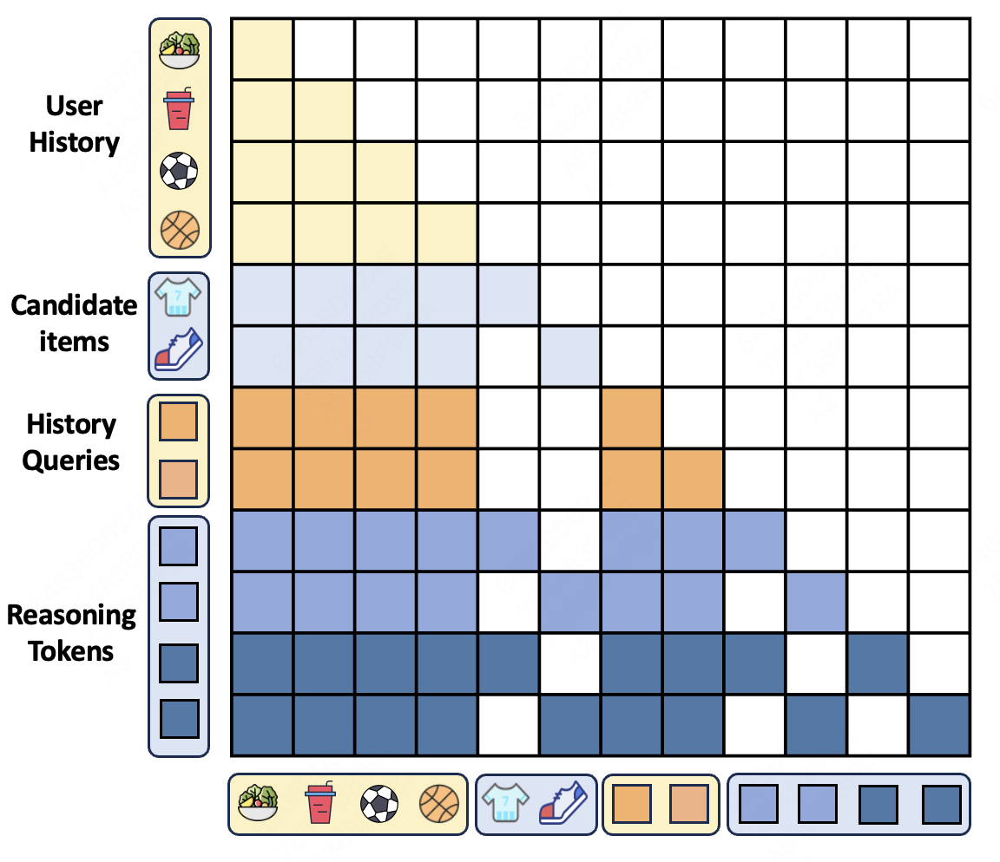
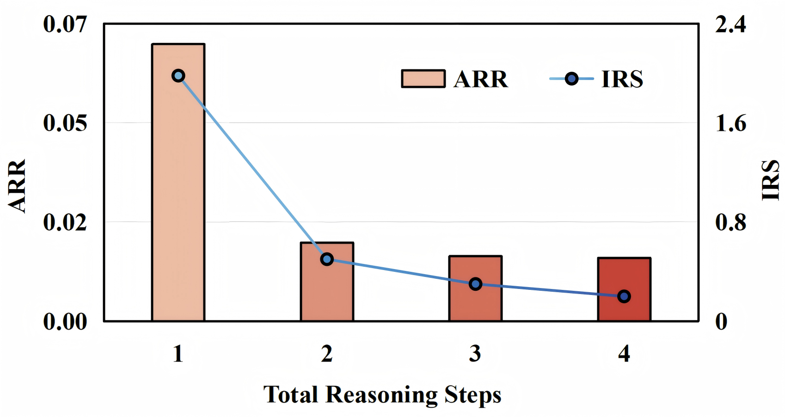

SHARE
Generative ranking models usually lay out the user profile, the behavior sequence and a batch of candidate items as one token sequence, score every candidate in a single forward pass, and stop there. This paper from Meituan and the University of Science and Technology of China asks whether a few extra steps after that pass can be spent purely on correcting each candidate's score. Their method, Refiner, attaches a "reasoning token" to each candidate and runs the Transformer again; each step predicts only a correction added to the existing score rather than a new score. The original model is fully frozen, and only LoRA and a new output layer are trained. On the Steam dataset it lifts the AUC of MTGR, Meituan's production generative ranking model, from 0.7698 to 0.7872. Attached to the online 15-layer MTGR for a 7-day A/B test, it raised per-impression CTR by 0.75% and GMV by 0.46%.
Ranking teams, especially those already running a Transformer ranker such as HSTU or MTGR, should read it, because it offers a plug-in that sits directly behind an existing model: not one parameter of the original model changes, Refiner trains incrementally on the original model's daily update schedule, and it can be removed if anything goes wrong. The idea most worth borrowing is the constraint that "each step learns only a residual", which makes the extra steps add corrections to the original scores to improve candidate ranking. Caveats: on the public datasets each request ranks only two candidates (one positive plus one random negative), the gain on the industrial offline set is only 1 to 2.5 per mille, and latency is reported only in relative terms.
What problem is it solving?
Ranking differs from retrieval. Retrieval only needs good items in the candidate pool; ranking must separate fine differences among candidates that are all reasonably good. A score gap of 0.02 can decide which item goes first.
A model that scores in one forward pass never gets to "look again". Take an illustrative example: a user often buys coffee beans and once bought a grinder. There are two candidates: A is a popular instant coffee, B is a niche pour-over filter paper.
| Candidate | Original score (illustrative) | True label | Correction (illustrative) | Corrected score |
|---|---|---|---|---|
| A Instant coffee | 0.62 | Not clicked | −0.10 | 0.52 |
| B Pour-over filter | 0.58 | Clicked | +0.15 | 0.73 |
The original model ranks the popular A first, because A's item embedding is well trained while B is too niche for a reliable representation. If, after the first scoring, B could combine with the user's history once more on its own (the grinder purchase suggests pour-over brewing) and receive a positive correction, the order would flip. This is exactly what Refiner sets out to do: the extra computation does not re-score, it only adds to or subtracts from the existing score.
Existing "latent reasoning" recommenders such as ReaRec iterate on the user representation and serve next-item prediction in retrieval. Ranking is different: candidates are given explicitly and each needs its own correction, so the authors had to redesign where reasoning happens and what it learns.
The overall pipeline

The pipeline has three steps:
| Step | Input | What it does | Output |
|---|---|---|---|
| Step 0 | User profile, behavior sequence, K candidates | One forward pass of the frozen original model | Original scores, each candidate's output vector, output vectors of the history segment |
| Build input | Outputs of step 0 | Take each candidate position's output as the step-1 reasoning token, and the outputs of the last few history positions as history summary tokens | A longer sequence |
| Step r | Original input + history summaries + reasoning tokens of steps 1 to r | The whole sequence runs again from layer 1 through the Transformer with LoRA; the last K positions go through the new output layer | One correction per candidate |
The final score is the original score plus the sum of corrections from every step. The division of labor is that the original model provides the base score and the reasoning steps only fix errors; the two have separate parameters and separate training objectives. The three designs are unpacked below.
Why does each step learn only a residual?
The most direct approach is for each step to predict a full score again, supervised with BCE. The trouble is that each step can then overturn the previous step's conclusion entirely, and the reasoning steps end up doing the same job as the original model and interfering with it.
Refiner writes the cumulative score at step r as the original score plus each step's correction:
Here is the score from the frozen original model and is the correction predicted by the reasoning output layer at step i. During training, each step's cumulative score is pushed toward the 0/1 label with a squared error , and the errors of all steps are summed.
Work it through for candidate B above (illustrative). The label is 1 and the original score is 0.58, so the squared error is 0.42² ≈ 0.176. Step 1 predicts +0.15, the cumulative score becomes 0.73, and the error drops to 0.27² ≈ 0.073. Step 2 predicts another correction, and training sums the squared errors of all steps' cumulative scores to encourage prediction error reduction. In the experiments, the authors observed that later steps produced progressively smaller corrections.
Why squared error rather than BCE? is the original model's probability (the original model itself was trained with BCE directly on the score), but the corrections added on top have no bounds, so the cumulative score can drop below 0 or rise above 1. BCE takes the log of the score and is undefined outside 0 to 1; squared error works on any real value. An alternative would be to add the corrections to the logit before the sigmoid, then apply the sigmoid and supervise with BCE, which keeps the cumulative score between 0 and 1, but the paper did not test this.
The ablation has a related variant: drop the residual, and have each step predict a full score directly under BCE supervision. Steam AUC drops from 0.7872 to 0.7763, about the same loss as removing the history summaries. But this variant changes two things at once: corrections are no longer accumulated, and the loss switches from squared error to BCE. So it only shows that "accumulated corrections + squared error" beats "full prediction per step + BCE"; it cannot tell which change matters, nor prove that the gain comes entirely from the "only correct, never redo" constraint.
Reasoning tokens and history summaries: how each candidate gets its own correction
Every candidate gets one reasoning token per step. The step-1 reasoning token is simply the original model's step-0 output vector at that candidate's position, and the step-r token is the output of step r−1, so reasoning is passed along step by step.
Several candidates must be corrected in parallel without peeking at each other, so the attention mask is changed.

There are only two rules. Candidate B's reasoning token can see the user profile, all behaviors, the history summaries, candidate B itself and B's reasoning tokens from earlier steps, but not candidate A or A's reasoning tokens. History summary tokens have the same visibility as the behavior sequence. One forward pass can therefore correct all candidates at once without information leaking between them.
Here is where the history summaries (the paper calls them history queries) come from. At step 0 the frozen original model runs the full original input and produces a final-layer output at every position. The outputs at the last positions of the user behavior segment are the history summary tokens; in the same forward pass, the outputs at the last K positions (the K candidates) are the step-1 reasoning tokens. The history summaries are computed only this once and then appended unchanged to the input at every step.
Note that step r (r≥1) does not compute only the new tokens: the original input, the history summaries and the reasoning tokens of steps 1 to r form one sequence, and the whole thing runs again from layer 1 through the Transformer with LoRA. So the behavior sequence is re-encoded at every step, and reasoning tokens attend to it afresh at every step.
So why add history summaries? The difference is what a reasoning token can use in the early layers. Behavior tokens enter layer 1 as raw embeddings and only build up an understanding of the whole history over the following layers (the ones carrying LoRA). The history summaries are the original model's conclusion after all of its layers, placed in the input as ready-made tokens. A reasoning token can attend to them from layer 1 instead of relying on the LoRA layers to rebuild that view. This is our reading of why it helps; the paper itself only says they provide "condensed global user context", without further analysis, and backs it with the experiments below.
Removing the history summaries drops Steam AUC from 0.7872 to 0.7764. More summaries are not always better: the authors tried 0 to 16, and 2 or 4 worked best, because too many bring in redundant signals. Adding 2 to 4 of them costs less than 10% extra inference time.
Why freeze the original model?
Production ranking models have usually been trained for a long time and update incrementally every day; retraining a larger model is risky and expensive. Refiner freezes the original model's embeddings, Transformer and output layer, and step 0 uses the original model as is. From step 1 on, LoRA is added to the same Transformer, plus a new output layer that emits corrections. Only LoRA and the new output layer are trained.
This brings two benefits. The original model's scoring behavior is fully preserved, so a reasoning mistake at worst gives a biased correction and never degrades the base score. In production it can follow the original model's daily updates: each day it loads that day's original model and freezes it, and Refiner's parameters continue training from the previous day's version.
The most interesting ablation is the end-to-end variant: no LoRA and no new output layer, with the original model trained jointly on the reasoning objective. Its Steam AUC is only 0.7650, lower than plain MTGR without any reasoning (0.7698). The authors interpret this result as suggesting that jointly optimizing the full model may weaken the functional separation between base prediction and reasoning refinement.
Results
The main experiments fix the number of reasoning steps at 1. On the public datasets each positive is paired with one random negative, which amounts to ranking two candidates per request; the industrial dataset comes from online exposure logs, and the candidate count follows the production pipeline.
| Method | Steam AUC | Steam GAUC | MovieLens10M AUC | Industrial CTR AUC | Industrial CTR GAUC |
|---|---|---|---|---|---|
| MTGR | 0.7698 | 0.7397 | 0.7674 | 0.7404 | 0.6909 |
| MTGR + ReaRec | 0.7785 | 0.7443 | 0.7719 | 0.7410 | 0.6913 |
| MTGR + Refiner | 0.7872 | 0.7594 | 0.7864 | 0.7417 | 0.6920 |
ReaRec is a latent reasoning method designed for retrieval, which the authors adapted to score several candidates at once as a comparison. Refiner beats it in every setting, which suggests that a residual objective and candidate-level reasoning built for ranking fit better than borrowing the retrieval recipe.
The industrial gain is much smaller: CTR GAUC rises by only 1.6 per mille. The authors attribute this to the original model having been polished in production, leaving little room; they also note that the industry generally treats a 1 per mille gain as meaningful, and the paired test on this difference gives p = 0.008.
In the group analysis, Refiner gains most on the least popular item group and least on the most popular one. This matches the illustrative example at the start: the original model's representations of niche items are unreliable, so there is the most room to correct them.
Going from 1 to 4 reasoning steps, gains diminish quickly. Figure 5 shows the size of each step's correction shrinking, with later steps making only small adjustments, while inference time keeps growing with the number of steps, so the authors recommend 1 or 2 steps.

The online test attached Refiner to the 15-layer MTGR, used only 1 reasoning step because of latency, ran on 1% of traffic, and had 7 days of warm-up followed by 7 days of observation.
| Metric | Per-impression CTR | Per-user CTR | Per-user click-to-conversion | Orders | GMV |
|---|---|---|---|---|---|
| Lift over MTGR | +0.75% | +0.12% | +0.21% | +0.19% | +0.46% |
The lift was positive on every one of the 7 days, so no single day pulled up the average. This shows that incremental training can reliably keep up with the original model's daily updates.
Limitations as I see them
First, the public-dataset setup is too easy. Each request ranks only one positive against one random negative, and a random negative is usually easy to tell apart, so the 2% to 4% relative gains on public data shrink to 1.6 to 2.5 per mille on real industrial candidate sets. Readers should go by the industrial numbers.
Second, latency is not reported in absolute terms. Each extra reasoning step reruns the Transformer over a longer sequence, and industrial users have an average behavior length of 1,363. The paper gives only relative inference time and says the reasoning steps have not been optimized for serving, which is also why production uses only 1 step. To judge deployment cost you would have to measure it yourself.
Third, there are few comparisons. The only latent reasoning baseline, ReaRec, is adapted, and the related OnePiece is not compared head to head because it needs interaction among candidates and a different backbone.
How a recommendation or search team could try it
- Add just 1 reasoning step behind your existing Transformer ranker: freeze the original model, add LoRA and a correction output layer, and train the cumulative score with squared error. Look at GAUC offline first, since it is more sensitive to fine ordering within a request.
- Start with 2 history summaries, taken from the original model's outputs at the last two history positions. This step is cheap and contributes clearly in the ablation.
- Focus on two groups, niche items and long-sequence users, where the paper's gains concentrate. If these two groups do not improve, the overall number most likely will not either.
- Measure the latency of the extra forward pass online first, then set up incremental training on the original model's daily schedule. Gains beyond 1 step are small, so do not start with more.
Bottom line
Using the extra steps to predict additive corrections to the original scores while freezing the base model and training only the added modules is a low-risk way to add reasoning to a ranking model already in production.
| Dimension | Assessment |
|---|---|
| Problem importance | Medium-high. Whether extra computation can buy precision in ranking is the next question generative ranking has to answer |
| Method novelty | Medium. Reasoning tokens and LoRA are off-the-shelf; the combination of a residual objective and a candidate-level mask is the contribution |
| Experimental evidence | Medium. Industrial offline and online A/B exist, but the public setup is easy and the industrial gain is only 1 to 2.5 per mille |
| Engineering cost | Medium. The original model is untouched, but it needs one more full-sequence forward pass and an incremental training flow that follows the original model |
| Worth trying? | Yes, for teams with a Transformer ranker, a high share of niche items, and room for one extra forward pass |
How did this read for you?
Hoot made a note. Thanks for the feedback.
One tap, no sign-in; tap again to undo. Only anonymous counts are kept, never who you are.
Discussion
Add experiment details, reproduction notes or a different take. Requires a GitHub sign-in.
Loading the discussion…